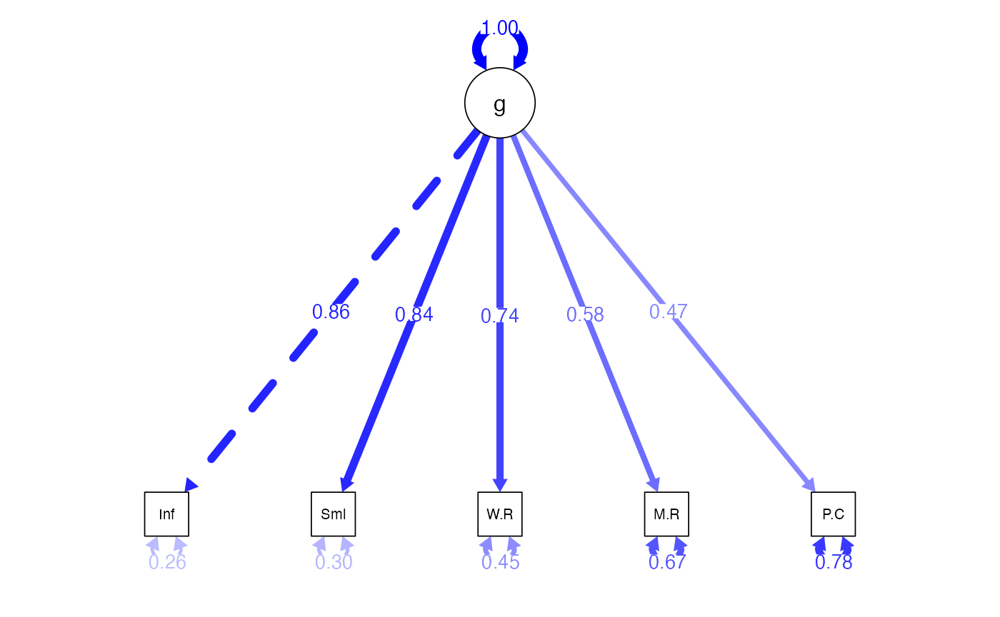

CFA: Basics
lecture_cfa.Rmd
Relation to EFA
- You have a bunch of questions
- You have an idea (or sometimes not!) of how many factors to expect
- You let the questions go where they want
- You remove the bad questions until you get a good fit
CFA models
- You set up the model with specific questions onto specific factors
- Forcing the cross loadings be zero
- You test to see if that model fits
- So, you may think about how confirmatory factor analysis is step two to exploring (exploratory factor analysis)
CFA Models
- Reflective – the latent variable causes the manifest variables scores
- Purpose is to understand the relationships between the measured variables
- Same theoretical concept as EFA
CFA Models Reflective Example
# a famous example, build the model
HS.model <- ' visual =~ x1 + x2 + x3
textual =~ x4 + x5 + x6
speed =~ x7 + x8 + x9 '
# fit the model
HS.fit <- cfa(HS.model, data = HolzingerSwineford1939)
# diagram the model
semPaths(HS.fit,
whatLabels = "std",
layout = "tree",
edge.label.cex = 1)
CFA Models
- Formative – latent variables are the result of manifest variables
- Similar to principal components analysis theoretical concept
- Potentially a use for demographics?
CFA Models Formative Example
# a famous example, build the model
HS.model <- ' visual <~ x1 + x2 + x3'
# fit the model
HS.fit <- cfa(HS.model, data = HolzingerSwineford1939)
#> Warning: lavaan->lav_data_full():
#> all observed variables are exogenous; model may not be identified
#> Warning: lavaan->lav_model_vcov():
#> Could not compute standard errors! The information matrix could not be
#> inverted. This may be a symptom that the model is not identified.
# diagram the model
semPaths(HS.fit,
whatLabels = "std",
layout = "tree",
edge.label.cex = 1)CFA Models
- The manifest variables in a CFA are sometimes called indicator variables
- Because they indicate what the latent variable should be since we do not directly measure the latent variable
General Set Up
- The latents will be correlated (because they are exogenous only)
- Similar to an oblique rotation
- Each factor section has to be identified
- You should have three measured variables per latent
- If you only have two, you need to set their coefficients to equal (estimated but equal)
- Arrows go from latent to measured (reflexive)
- We think that latent caused the measured answers
- Error terms on the measured variables, variance on the latent
variables
- If you are counting for degrees of freedom for identification
Correlated Error
- Generally, you leave the error terms uncorrelated, as you think they are separate items
- However:
- These questions all measure the same factor right?
- Often they are pretty similar
- Some answers will be related to other items
- So it’s not too big of a idea to say that item’s errors are related
- We can use modification indices to see if they should be correlated
- Make sure these make sense!
Interpretation
- The latent variable section includes the
factor loadingsor coefficients - These are the same idea as EFA - you want the relationship between
the latent variable and the manifest variable to be strong
- We used a rule of .300 before but for this rule, you should examine the standardized loading
- Otherwise, why would we think this item measures the latent variable?
Interpretation
- These coefficients are often called:
- Pattern coefficients (unstandardized): for every one unit in the latent variable, the manifest variable increases b units
- Structure coefficients (standardized): the correlation between the latent variable and the manifest variable
Identification Rules of Thumb:
- Latent variables should have four indicators
- Latent variables have three indicators AND error variances do not covary
- Latent variables have two indicators AND Error variances do not covary AND loadings are set to equal each other
Scaling
- Remember that scaling is the way we “set the scale” for the latent variable
- We usually do this by setting one of the pattern coefficients to 1 - the marker variable approach
- Another option is to to set the variance of the latent variable to 1
std.lvin the the standardized output- What does that do?
- Sets the scale to z-score
- Makes double headed arrow between latents correlation
- Make sure you are using unstandardized data!
Scaling
- So what is the
std.allas part of the “completely standardized solution? - Both the latent variable variance and the manifest variable variance is set to 1
- If you are going to report the standardized solution, this version is the most common, as it matches EFA and regression
- All of these options give you different loadings, but should not change model fit
Examples
- Reminder:
- When you use a correlation matrix as your input, the solution is already standardized!
- When you use a covariance matrix as your input, both the unstandardized and standardized solution can be viewed
One-Factor CFA Example
- IQ is often thought of as “g” or this overall cognitive ability
- Let’s look at an example of the WISC, which is an IQ test for children
- We have five of the subtest scores including
information,similarities,word reasoning,matrix reasoning, andpicture concepts
Convert Correlations to Covariance
wisc4.cor <- lav_matrix_lower2full(c(1,
0.72,1,
0.64,0.63,1,
0.51,0.48,0.37,1,
0.37,0.38,0.38,0.38,1))
# enter the SDs
wisc4.sd <- c(3.01 , 3.03 , 2.99 , 2.89 , 2.98)
# give everything names
colnames(wisc4.cor) <-
rownames(wisc4.cor) <-
names(wisc4.sd) <-
c("Information", "Similarities",
"Word.Reasoning", "Matrix.Reasoning", "Picture.Concepts")
# convert
wisc4.cov <- cor2cov(wisc4.cor, wisc4.sd)WISC One-Factor Model
- The
=~is used to define a reflexive latent variable -
~can be interpreted as Y is predicted by X -
=~can be interpreted as X is indicated by Ys
wisc4.model <- '
g =~ Information + Similarities + Word.Reasoning + Matrix.Reasoning + Picture.Concepts
'Analyze the Model
- Notice we changed to the
cfa()function - It has the same basic arguments
- The
std.lvoption can be used to only see the standardized solution on the latent variable, usually you want to set this toFALSE
wisc4.fit <- cfa(model = wisc4.model,
sample.cov = wisc4.cov,
sample.nobs = 550,
std.lv = FALSE)Summarize the Model
- Logical solution:
- Positive variances
- SMCs + Correlations < 1
- No error messages
- SEs are not “huge”
- Estimates:
- Do our questions load appropriately?
- Model fit:
- What do the fit indices indicate?
- Can we improve model fit without overfitting?
Summarize the Model
summary(wisc4.fit,
standardized=TRUE,
rsquare = TRUE,
fit.measures=TRUE)
#> lavaan 0.6-19 ended normally after 30 iterations
#>
#> Estimator ML
#> Optimization method NLMINB
#> Number of model parameters 10
#>
#> Number of observations 550
#>
#> Model Test User Model:
#>
#> Test statistic 26.775
#> Degrees of freedom 5
#> P-value (Chi-square) 0.000
#>
#> Model Test Baseline Model:
#>
#> Test statistic 1073.427
#> Degrees of freedom 10
#> P-value 0.000
#>
#> User Model versus Baseline Model:
#>
#> Comparative Fit Index (CFI) 0.980
#> Tucker-Lewis Index (TLI) 0.959
#>
#> Loglikelihood and Information Criteria:
#>
#> Loglikelihood user model (H0) -6378.678
#> Loglikelihood unrestricted model (H1) -6365.291
#>
#> Akaike (AIC) 12777.357
#> Bayesian (BIC) 12820.456
#> Sample-size adjusted Bayesian (SABIC) 12788.712
#>
#> Root Mean Square Error of Approximation:
#>
#> RMSEA 0.089
#> 90 Percent confidence interval - lower 0.058
#> 90 Percent confidence interval - upper 0.123
#> P-value H_0: RMSEA <= 0.050 0.022
#> P-value H_0: RMSEA >= 0.080 0.708
#>
#> Standardized Root Mean Square Residual:
#>
#> SRMR 0.034
#>
#> Parameter Estimates:
#>
#> Standard errors Standard
#> Information Expected
#> Information saturated (h1) model Structured
#>
#> Latent Variables:
#> Estimate Std.Err z-value P(>|z|) Std.lv Std.all
#> g =~
#> Information 1.000 2.578 0.857
#> Similarities 0.985 0.045 21.708 0.000 2.541 0.839
#> Word.Reasoning 0.860 0.045 18.952 0.000 2.217 0.742
#> Matrix.Reasnng 0.647 0.047 13.896 0.000 1.669 0.578
#> Picture.Cncpts 0.542 0.050 10.937 0.000 1.398 0.470
#>
#> Variances:
#> Estimate Std.Err z-value P(>|z|) Std.lv Std.all
#> .Information 2.395 0.250 9.587 0.000 2.395 0.265
#> .Similarities 2.709 0.258 10.482 0.000 2.709 0.296
#> .Word.Reasoning 4.009 0.295 13.600 0.000 4.009 0.449
#> .Matrix.Reasnng 5.551 0.360 15.400 0.000 5.551 0.666
#> .Picture.Cncpts 6.909 0.434 15.922 0.000 6.909 0.779
#> g 6.648 0.564 11.788 0.000 1.000 1.000
#>
#> R-Square:
#> Estimate
#> Information 0.735
#> Similarities 0.704
#> Word.Reasoning 0.551
#> Matrix.Reasnng 0.334
#> Picture.Cncpts 0.221New Functions
-
std.nox: the standardized estimates are based on both the variances of both (continuous) observed and latent variables, but not the variances of exogenous covariates - This output is the best way to get the confidence intervals for each parameter
parameterestimates(wisc4.fit,
standardized=TRUE)
#> lhs op rhs est se z pvalue ci.lower
#> 1 g =~ Information 1.000 0.000 NA NA 1.000
#> 2 g =~ Similarities 0.985 0.045 21.708 0 0.896
#> 3 g =~ Word.Reasoning 0.860 0.045 18.952 0 0.771
#> 4 g =~ Matrix.Reasoning 0.647 0.047 13.896 0 0.556
#> 5 g =~ Picture.Concepts 0.542 0.050 10.937 0 0.445
#> 6 Information ~~ Information 2.395 0.250 9.587 0 1.906
#> 7 Similarities ~~ Similarities 2.709 0.258 10.482 0 2.202
#> 8 Word.Reasoning ~~ Word.Reasoning 4.009 0.295 13.600 0 3.431
#> 9 Matrix.Reasoning ~~ Matrix.Reasoning 5.551 0.360 15.400 0 4.845
#> 10 Picture.Concepts ~~ Picture.Concepts 6.909 0.434 15.922 0 6.058
#> 11 g ~~ g 6.648 0.564 11.788 0 5.543
#> ci.upper std.lv std.all
#> 1 1.000 2.578 0.857
#> 2 1.074 2.541 0.839
#> 3 0.949 2.217 0.742
#> 4 0.739 1.669 0.578
#> 5 0.640 1.398 0.470
#> 6 2.885 2.395 0.265
#> 7 3.215 2.709 0.296
#> 8 4.587 4.009 0.449
#> 9 6.258 5.551 0.666
#> 10 7.759 6.909 0.779
#> 11 7.754 1.000 1.000New Functions
fitted(wisc4.fit) ## estimated covariances
#> $cov
#> Infrmt Smlrts Wrd.Rs Mtrx.R Pctr.C
#> Information 9.044
#> Similarities 6.551 9.164
#> Word.Reasoning 5.716 5.633 8.924
#> Matrix.Reasoning 4.303 4.241 3.700 8.337
#> Picture.Concepts 3.606 3.553 3.100 2.334 8.864
wisc4.cov ## actual covariances
#> Information Similarities Word.Reasoning Matrix.Reasoning
#> Information 9.060100 6.566616 5.759936 4.436439
#> Similarities 6.566616 9.180900 5.707611 4.203216
#> Word.Reasoning 5.759936 5.707611 8.940100 3.197207
#> Matrix.Reasoning 4.436439 4.203216 3.197207 8.352100
#> Picture.Concepts 3.318826 3.431172 3.385876 3.272636
#> Picture.Concepts
#> Information 3.318826
#> Similarities 3.431172
#> Word.Reasoning 3.385876
#> Matrix.Reasoning 3.272636
#> Picture.Concepts 8.880400All Fit Indices
fitmeasures(wisc4.fit)
#> npar fmin chisq
#> 10.000 0.024 26.775
#> df pvalue baseline.chisq
#> 5.000 0.000 1073.427
#> baseline.df baseline.pvalue cfi
#> 10.000 0.000 0.980
#> tli nnfi rfi
#> 0.959 0.959 0.950
#> nfi pnfi ifi
#> 0.975 0.488 0.980
#> rni logl unrestricted.logl
#> 0.980 -6378.678 -6365.291
#> aic bic ntotal
#> 12777.357 12820.456 550.000
#> bic2 rmsea rmsea.ci.lower
#> 12788.712 0.089 0.058
#> rmsea.ci.upper rmsea.ci.level rmsea.pvalue
#> 0.123 0.900 0.022
#> rmsea.close.h0 rmsea.notclose.pvalue rmsea.notclose.h0
#> 0.050 0.708 0.080
#> rmr rmr_nomean srmr
#> 0.298 0.298 0.034
#> srmr_bentler srmr_bentler_nomean crmr
#> 0.034 0.034 0.042
#> crmr_nomean srmr_mplus srmr_mplus_nomean
#> 0.042 0.034 0.034
#> cn_05 cn_01 gfi
#> 228.408 310.899 0.982
#> agfi pgfi mfi
#> 0.947 0.327 0.980
#> ecvi
#> 0.085Modification Indices
modificationindices(wisc4.fit, sort = T)
#> lhs op rhs mi epc sepc.lv sepc.all sepc.nox
#> 21 Matrix.Reasoning ~~ Picture.Concepts 14.157 1.058 1.058 0.171 0.171
#> 19 Word.Reasoning ~~ Matrix.Reasoning 8.931 -0.710 -0.710 -0.151 -0.151
#> 15 Information ~~ Picture.Concepts 5.493 -0.565 -0.565 -0.139 -0.139
#> 20 Word.Reasoning ~~ Picture.Concepts 2.029 0.365 0.365 0.069 0.069
#> 14 Information ~~ Matrix.Reasoning 1.447 0.280 0.280 0.077 0.077
#> 18 Similarities ~~ Picture.Concepts 0.838 -0.223 -0.223 -0.051 -0.051
#> 16 Similarities ~~ Word.Reasoning 0.791 0.242 0.242 0.073 0.073
#> 13 Information ~~ Word.Reasoning 0.279 0.147 0.147 0.047 0.047
#> 17 Similarities ~~ Matrix.Reasoning 0.147 -0.089 -0.089 -0.023 -0.023
#> 12 Information ~~ Similarities 0.010 0.034 0.034 0.013 0.013Diagram the Model
semPaths(wisc4.fit,
whatLabels="std",
what = "std",
layout ="tree",
edge.color = "blue",
edge.label.cex = 1)
WISC Two-Factor Model
- Note that we only have two items on the latent variable
- If we see an identification error, we can set these to equal (homework hint!)
wisc4.model2 <- '
V =~ Information + Similarities + Word.Reasoning
F =~ Matrix.Reasoning + Picture.Concepts
'
# wisc4.model2 <- '
# V =~ Information + Similarities + Word.Reasoning
# F =~ a*Matrix.Reasoning + a*Picture.Concepts
# 'Analyze the Model
wisc4.fit2 <- cfa(wisc4.model2,
sample.cov=wisc4.cov,
sample.nobs=550,
std.lv = F)Summarize the Model
summary(wisc4.fit2,
standardized=TRUE,
rsquare = TRUE,
fit.measures=TRUE)
#> lavaan 0.6-19 ended normally after 44 iterations
#>
#> Estimator ML
#> Optimization method NLMINB
#> Number of model parameters 11
#>
#> Number of observations 550
#>
#> Model Test User Model:
#>
#> Test statistic 12.687
#> Degrees of freedom 4
#> P-value (Chi-square) 0.013
#>
#> Model Test Baseline Model:
#>
#> Test statistic 1073.427
#> Degrees of freedom 10
#> P-value 0.000
#>
#> User Model versus Baseline Model:
#>
#> Comparative Fit Index (CFI) 0.992
#> Tucker-Lewis Index (TLI) 0.980
#>
#> Loglikelihood and Information Criteria:
#>
#> Loglikelihood user model (H0) -6371.634
#> Loglikelihood unrestricted model (H1) -6365.291
#>
#> Akaike (AIC) 12765.269
#> Bayesian (BIC) 12812.678
#> Sample-size adjusted Bayesian (SABIC) 12777.759
#>
#> Root Mean Square Error of Approximation:
#>
#> RMSEA 0.063
#> 90 Percent confidence interval - lower 0.026
#> 90 Percent confidence interval - upper 0.103
#> P-value H_0: RMSEA <= 0.050 0.244
#> P-value H_0: RMSEA >= 0.080 0.272
#>
#> Standardized Root Mean Square Residual:
#>
#> SRMR 0.019
#>
#> Parameter Estimates:
#>
#> Standard errors Standard
#> Information Expected
#> Information saturated (h1) model Structured
#>
#> Latent Variables:
#> Estimate Std.Err z-value P(>|z|) Std.lv Std.all
#> V =~
#> Information 1.000 2.587 0.860
#> Similarities 0.984 0.046 21.625 0.000 2.545 0.841
#> Word.Reasoning 0.858 0.045 18.958 0.000 2.219 0.743
#> F =~
#> Matrix.Reasnng 1.000 1.989 0.689
#> Picture.Cncpts 0.825 0.085 9.747 0.000 1.642 0.552
#>
#> Covariances:
#> Estimate Std.Err z-value P(>|z|) Std.lv Std.all
#> V ~~
#> F 4.233 0.399 10.604 0.000 0.823 0.823
#>
#> Variances:
#> Estimate Std.Err z-value P(>|z|) Std.lv Std.all
#> .Information 2.352 0.253 9.295 0.000 2.352 0.260
#> .Similarities 2.685 0.261 10.282 0.000 2.685 0.293
#> .Word.Reasoning 4.000 0.295 13.555 0.000 4.000 0.448
#> .Matrix.Reasnng 4.380 0.458 9.557 0.000 4.380 0.525
#> .Picture.Cncpts 6.168 0.451 13.673 0.000 6.168 0.696
#> V 6.692 0.567 11.807 0.000 1.000 1.000
#> F 3.957 0.569 6.960 0.000 1.000 1.000
#>
#> R-Square:
#> Estimate
#> Information 0.740
#> Similarities 0.707
#> Word.Reasoning 0.552
#> Matrix.Reasnng 0.475
#> Picture.Cncpts 0.304Diagram the Model
semPaths(wisc4.fit2,
whatLabels="std",
what = "std",
edge.color = "pink",
edge.label.cex = 1,
layout="tree")Compare the Models
anova(wisc4.fit, wisc4.fit2)
#>
#> Chi-Squared Difference Test
#>
#> Df AIC BIC Chisq Chisq diff RMSEA Df diff Pr(>Chisq)
#> wisc4.fit2 4 12765 12813 12.687
#> wisc4.fit 5 12777 12820 26.775 14.088 0.15426 1 0.0001745 ***
#> ---
#> Signif. codes: 0 '***' 0.001 '**' 0.01 '*' 0.05 '.' 0.1 ' ' 1
fitmeasures(wisc4.fit, c("aic", "ecvi"))
#> aic ecvi
#> 12777.357 0.085
fitmeasures(wisc4.fit2, c("aic", "ecvi"))
#> aic ecvi
#> 12765.269 0.063How to Tidy lavaan Output
#install.packages("parameters")
library(parameters)
model_parameters(wisc4.fit, standardize = TRUE)
#> # Loading
#>
#> Link | Coefficient | SE | 95% CI | z | p
#> --------------------------------------------------------------------------
#> g =~ Information | 0.86 | 0.02 | [0.82, 0.89] | 49.47 | < .001
#> g =~ Similarities | 0.84 | 0.02 | [0.80, 0.87] | 46.32 | < .001
#> g =~ Word.Reasoning | 0.74 | 0.02 | [0.70, 0.79] | 32.26 | < .001
#> g =~ Matrix.Reasoning | 0.58 | 0.03 | [0.52, 0.64] | 18.29 | < .001
#> g =~ Picture.Concepts | 0.47 | 0.04 | [0.40, 0.54] | 12.94 | < .001How to Tidy lavaan Output
library(broom)
tidy(wisc4.fit)
#> # A tibble: 11 × 8
#> term op estimate std.error statistic p.value std.lv std.all
#> <chr> <chr> <dbl> <dbl> <dbl> <dbl> <dbl> <dbl>
#> 1 g =~ Information =~ 1 0 NA NA 2.58 0.857
#> 2 g =~ Similarities =~ 0.985 0.0454 21.7 0 2.54 0.839
#> 3 g =~ Word.Reasoning =~ 0.860 0.0454 19.0 0 2.22 0.742
#> 4 g =~ Matrix.Reason… =~ 0.647 0.0466 13.9 0 1.67 0.578
#> 5 g =~ Picture.Conce… =~ 0.542 0.0496 10.9 0 1.40 0.470
#> 6 Information ~~ Inf… ~~ 2.40 0.250 9.59 0 2.40 0.265
#> 7 Similarities ~~ Si… ~~ 2.71 0.258 10.5 0 2.71 0.296
#> 8 Word.Reasoning ~~ … ~~ 4.01 0.295 13.6 0 4.01 0.449
#> 9 Matrix.Reasoning ~… ~~ 5.55 0.360 15.4 0 5.55 0.666
#> 10 Picture.Concepts ~… ~~ 6.91 0.434 15.9 0 6.91 0.779
#> 11 g ~~ g ~~ 6.65 0.564 11.8 0 1 1
glance(wisc4.fit)
#> # A tibble: 1 × 17
#> agfi AIC BIC cfi chisq npar rmsea rmsea.conf.high srmr tli
#> <dbl> <dbl> <dbl> <dbl> <dbl> <dbl> <dbl> <dbl> <dbl> <dbl>
#> 1 0.947 12777. 12820. 0.980 26.8 10 0.0890 0.123 0.0345 0.959
#> # ℹ 7 more variables: converged <lgl>, estimator <chr>, ngroups <int>,
#> # missing_method <chr>, nobs <dbl>, norig <dbl>, nexcluded <dbl>